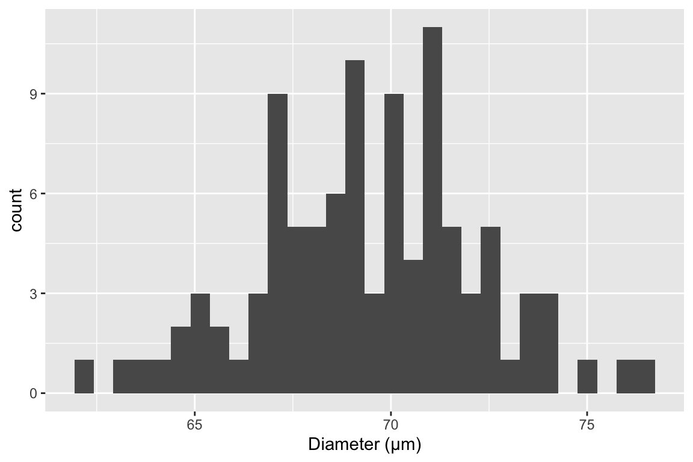
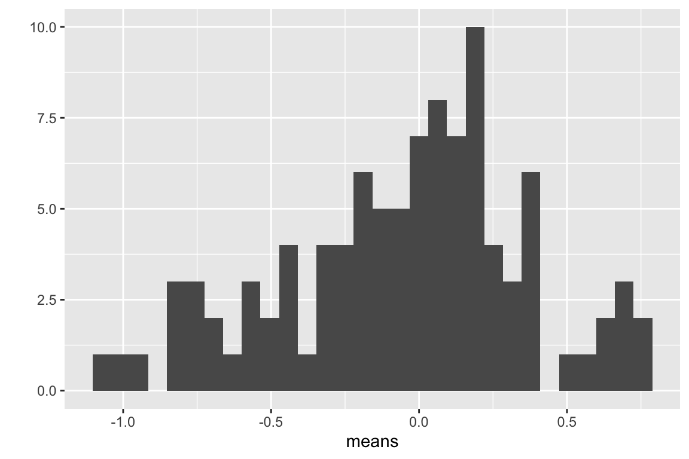
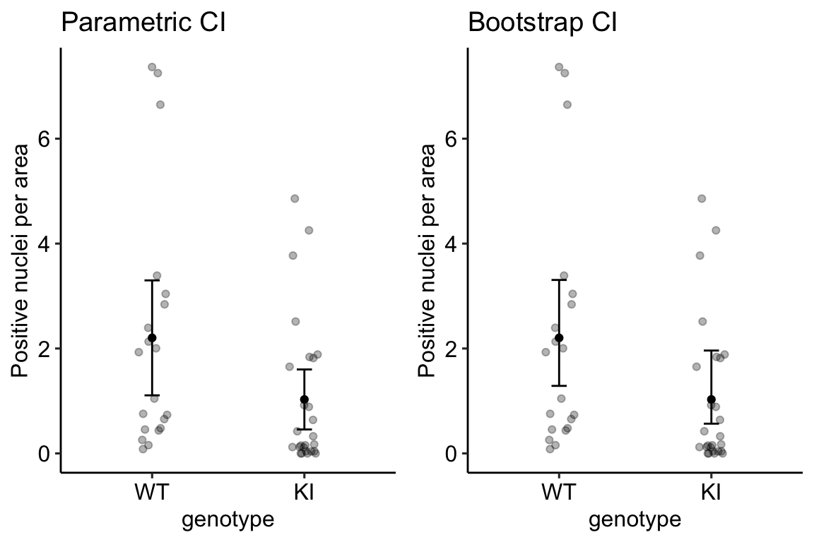
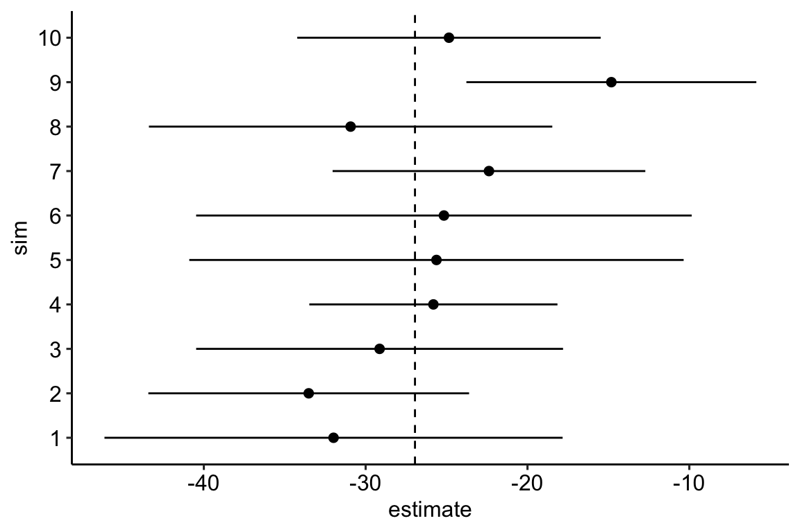

Chapter 5 Variability and Uncertainty (Standard Deviations, Standard Errors, and Confidence Intervals)
Uncertainty is the stuff of science. What do we mean by uncertainty in statistics? Uncertainty is the error in estimating a parameter, such as the mean of a sample, or the difference in means between two experimental treatments, or the predicted response given a certain change in conditions. Uncertainty emerges because of variability and is measured with a variance or its square root, which is a standard deviation. The standard deviation of a statistic is called a standard error of the statistic. Standard errors are to statistics of experimental data as atoms are to matter – everything is built from them.
5.1 Standard errors are used to compute p-values and confidence intervals
Let’s revisit Table 1.1 from the experiment presented in the introductory chapter Analyzing experimental data with a linear model.
cbind(coef(summary(exp2i_m1)),
confint(exp2i_m1)) %>%
kable(digits = c(2,2,1,3,2,2),
caption = "Coefficient table for linear model fit to exp2i data.") %>%
kable_styling()| Estimate | Std. Error | t value | Pr(>|t|) | 2.5 % | 97.5 % | |
|---|---|---|---|---|---|---|
| (Intercept) | 61.47 | 4.98 | 12.3 | 0.000 | 50.37 | 72.57 |
| treatmentASK1Δadipo | -21.60 | 7.05 | -3.1 | 0.012 | -37.30 | -5.90 |
The values in the second row give the inferential statistics for the estimate of the treatment effect. The estimate is in the column “Estimate”. To guide our inference about this value, we use the standard error of the estimate in the column “Std. Error”. We use this standard error to compute a t-value, which is given in the column “t value” and, from this, we can compute a p-value. This is the classic “t-test” that all experimental biology researchers are familiar with, although computed using the linear model and not the way presented in most introductory statistics textbooks (the two ways give numerically equivalent results). We also use the standard error to compute the boundaries of the 95% confidence interval of the estimate, which are given in the “2.5 %” and “97.5 %” columns. The importance of confidence intervals in statistical inference is less well appreciated among researchers in experimental biology. A p-value is a tool to help us infer if there is an effect. A confidence interval is a tool to help us infer the range of effects that are compatible with the data.
This chapter uses simulation to pump our intuition of standard errors and confidence intervals. We wait until the next chapter to focus on p-values.
5.2 Background
In any introductory statistics class, students are introduced to two measures of variability, the “standard deviation” and the “standard error.” These terms are absolutely fundamental to statistics. Yet, many biology researchers confuse these terms and certainly, introductory students do too.
When a research biologist uses the term “standard deviation,” they are probably referring to the sample standard deviation which is a measure of the variability of a sample. When a research biologist uses the term “standard error,” they are probably referring to the standard error of a mean, but it could be the standard error of another statistic, such as a difference between means or a regression slope. An important point to remember and understand is that all standard errors are standard deviations. This will make more sense soon.
5.2.1 Sample standard deviation
The sample standard deviation is a measure of the variability of a sample. For example, were we to look at a histological section of skeletal muscle we would see that the diameter of the fibers (the muscle cells) is variable. We could use imaging software to measure the diameter of a sample of 100 cells and get a distribution like this

The mean of this sample is 69.4µm and the standard deviation is 2.8 µm. The standard deviation is the square root of the variance, and so computed by
\[\begin{equation} s_y = \sqrt{\frac{\sum_{i=1}^n{(y_i - \overline{y})^2}}{n-1}} \tag{5.1} \end{equation}\]
Memorize this equation. To understand the logic of this measure of variability, note that \(y_i - \overline{y}\) is the deviation of the \(i\)th value from the sample mean, so the numerator is the sum of squared deviations. The numerator is a sum over \(n\) items and the denominator is \(n-1\) so the variance is (almost!) an averaged squared deviation. More variable samples will have bigger deviations and, therefore, bigger average squared deviations. Since the standard deviation is the square root of the variance, a standard deviation is the square root of an average squared deviation. This makes it similar in value to the averaged deviation (or average of the absolute values of the deviations since the average deviation is, by definition of a mean, zero).
5.2.1.1 Notes on the variance and standard deviation
- Variances are additive but standard deviations are not. This means that the variance of the sum of two independent (uncorrelated) random variables is simply the sum of the variances of each of the variables. This is important for many statistical analyses.
- The units of variance are the square of the original units, which is awkward for interpretation. The units of a standard deviation is the same as that of the original variable, and so is much easier to interpet.
- For variables that are approximately normally distributed, we can map the standard deviation to the quantiles of the distribution. For example, 68% of the values are within one standard deviation of the mean, 95% of the values are within two standard deviations, and 99% of the values are within three standard deviations.
5.2.2 Standard error of the mean
A standard error of a statistic is a measure of the precision of the statistic. The standard error of the mean is a measure of the precision of the estimate of the mean. The standard error of a difference in means is a measure of the precision of the estimate of the difference in means. The smaller the standard error, the more precise the estimate.
The standard error of the mean (SEM) is computed as
\[\begin{equation} SEM = \frac{s_y}{\sqrt{n}} \tag{5.2} \end{equation}\]
The SEM is often denoted \(s_{\bar{y}}\) to indicate that it is a standard deviation of the mean (\(\bar{y}\)).
5.2.2.1 The standard error of the mean can be thought of as a standard deviation of an infinitely long column of re-sampled means
In what sense is a standard error a standard deviation? This is kinda weird. If we sample 100 cells in the slide of muscle tissue and compute the mean diameter, how can the mean have a standard deviation? There is only one mean!
To understand how the SEM is a standard deviation, imagine that we sample \(n\) values from \(N(\mu, \sigma^2)\) (a normal distribution with mean \(\mu\) and variance \(\sigma^2\). The mean of our sample is an estimate of \(\mu\) and the standard deviation of sample is an estimate of \(\sigma\)) an infinite number of times and each time, we write down the mean of the new sample. This infinitely large sample of means is the sampling distribution of the mean. The standard deviation of the sampling distribution of the mean is the standard error of the mean. Our observed SEM is an estimate of this true value because our observed standard deviation is an estimate of \(\sigma\).
5.2.2.2 A standard deviation can be computed for any statistic – these are all standard errors.
The SEM is only one kind of standard error. A standard deviation can be computed for any statistic – these are all standard errors. For some statistics, such as the mean, the standard error can be computed directly using an equation, such as that for the SEM (equation (5.2)). For other statistics, there is no equation, and we need to use a computer intensive method known as the bootstrap to compute a standard error. We will return to the bootstrap in Section 5.4.
5.2.2.3 Notes on standard errors
- The units of a standard error are the units of the measured variable.
- A standard error is proportional to sample variability (the sample standard deviation, \(s_y\)) and inversely proportional to sample size (\(n\)). Sample variability is a function of both natural variation (there really is variation in diameter among fibers in the quadriceps muscle) and measurement error (imaging software with higher resolution can measure a diameter with less error). Since the SEM is a measure of the precision of estimating a mean, this means this precision will increase (or the SEM will decrease) if 1) an investigator uses methods that reduce measurement error and 2) an investigator computes the mean from a larger sample.
- This last point (the SEM decreases with sample size) seems obvious when looking at equation (5.2), since \(n\) is in the denominator. Of course \(n\) is also in the denominator of equation (5.1) for the sample standard deviation but the standard deviation does not decrease as sample size increases. First this wouldn’t make any sense – variability is variability. A sample of 10,000 cell diameters should be no more variable than a sample of 100 cell diameters (think about if you agree with this or not). Second, this should also be obvious from equation (5.1). The standard deviation is the square root of an average and averages don’t increase with the number of things summed since both the the numerator (a sum) and denominator increase with \(n\).
5.3 Simulations – using fake data as an intuition pump
5.3.1 Using Google Sheets to generate fake data to explore the standard error
In statistics we are interested in estimated parameters of a population using measures from a sample. The goal in this section is to use Google Sheets (or Microsoft Excel) to use fake data to discover the behavior of sampling and to gain some intuition about uncertainty using standard errors.
5.3.1.1 Steps
- Open Google Sheets
- In cell A1 type “mu”. mu is the greek letter \(\mu\) and is very common notation for the poplation value (the TRUE value!) of the mean of some hypothetical measure. In cell B1, insert some number as the value of \(\mu\). Any number! It can be negative or positive.
- In cell A2 type “sigma”. sigma is the greek letter \(\sigma\). \(\sigma^2\) is very common (universal!) notation for the population (TRUE) variance of some measure or parameter. Notice that the true (population) values of the mean and variance are greek letters. This is pretty standard in statistics. In cell B2, insert some positive number (standard deviations are the positive square roots of the variance).
- In cell A8 type the number 1
- In cell A9 insert the equation “=A8 + 1”. What is this equation doing? It is adding the number 1 to to the value in the cell above, so the resulting value should be 2.
- In Cell B8, insert the equation “=normsinv(rand())*$B$2 + $B$1”. The first part of the equation creates a random normal variable with mean 0 and standard deviation 1. multiplication and addition transform this to a random normal variable with mean \(\mu\) and standard deviation \(\sigma\) (the values you set in cells B1 and B2).
- copy cell B8 and paste into cell B9. Now Highlight cells A9:B9 and copy the equations down to row 107. You now have 100 random variables sampled from a infinite population with mean \(\mu\) and standard deviation \(\sigma\).
- In cell A4 write “mean 10”. In cell B4 insert the equation “=average(B8:B17)”. The resulting value is the sample mean of the first 10 random variables you created. Is the mean close to \(\mu\)?
- In cell A5 write “sd 10”. In cell B5 insert the equation “stdev(B8:B17)”. The result is the sample standard deviation of the first 10 random variables. Is this close to \(\sigma\)?
- In cell A6 write “mean 100”. In cell B6 insert the equation “=average(B8:B107)”. The resulting value is the sample mean of the all 100 random variables you created. Is this mean closer to \(\mu\) than mean 10?
- In cell A7 write “sd 100”. In cell B7 insert the equation “=stdev(B8:B107)”. The resulting value is the sample standard deviation of the all 100 random variables you created. Is this SD closer to \(\sigma\) than sd 10?
The sample standard deviation is a measure of the variability of the sample. The more spread out the sample (the further each value is from the mean), the bigger the sample standard deviation. The sample standard deviation is most often simply known as “The” standard deviation, which is a bit misleading since there are many kinds of standard deviations!
Remember that your computed mean and standard deviations are estimates computed from a sample. They are estimates of the true values \(\mu\) and \(\sigma\). Explore the behavior of the sample mean and standard deviation by re-calculating the spreadsheet. In Excel, a spreadsheet is re-calculated by simultaneously pressing the command and equal key. In Google, command-R recalculates but is painfully slow. Instead, if using Google Sheets, just type the number 1 into a blank cell, and the sheet recalculates quickly. Do it again. And again.
Each time you re-calculate, a new set of random numbers are generated and the new means and standard deviations are computed. Compare mean 10 and mean 100 each re-calculation. Notice that these estimates are variable. They change with each re-calculation. How variable is mean 10 compared to mean 100? The variability of the estimate of the mean is a measure of uncertainty in the estimate. Are we more uncertain with mean 10 or with mean 100? This variability is measured by a standard deviation. This standard deviation of the mean is also called the standard error of the mean. Many researchers are loose with terms and use “The” standard error to mean the standard error of the mean, even though there are many kinds of standard errors. In general, “standard error”” is abbreviated as “SE.” Sometimes “standard error of the mean” is specifically abbreviated to “SEM.”
The standard error of the mean is a measure of the precision in estimating the mean. The smaller the value the more precise the estimate. The standard error of the mean is a standard deviation of the mean. This is kinda weird. If we sample a population one time and compute a mean, how can the mean have a standard deviation? There is only one value! And we compute this value using the sample standard deviation: \(SEM = \frac{SD}{\sqrt{N}}\). To understand how the SEM is a standard deviation, Imagine recalculating the spread sheet an infinite number of times and each time, you write down the newly computed mean. The standard error of the mean is the standard deviation of this infinitely long column of means.
5.3.2 Using R to generate fake data to explore the standard error
note that I use “standard deviation” to refer to the sample standard deviation and “standard error” to refer to the standard error of the mean (again, we can compute standard errors as a standard deviation of any kind of estimate)
5.3.2.1 part I
In the exercise above, you used Google Sheets to generate \(p\) columns of fake data. Each column had \(n\) elements, so the matrix of fake data was \(n \times p\) (it is standard in most fields to specify a matrix as rows by columns). This is much easier to do in R and how much grows exponentially as the size of the matrix grows.
To start, we just generate a \(n \times p\) matrix of normal random numbers.
set.seed(1) # so everyone gets the same result!
# R script to gain some intuition about standard deviation (sd) and standard error (se)
# you will probably need to install ggplot2 using library(ggplot2)
n <- 6 # sample size
p <- 100 # number of columns of fake data to generate
# this is a step-by-step method for constructing the matrix
N <- n * p # the total number of fake values to draw from a random distribution
fake_data <- rnorm(N, mean = 0, sd = 1) # create a vector of N fake values
fake_data <- matrix(fake_data, nrow = n, ncol = p) # put into a matrix object
# the three step-by-step lines above can be replaced
# with a more compact code using the pipe operator
fake_data <- rnorm(n * p, mean = 0, sd = 1) %>%
matrix(nrow = n, ncol = p)The compacted code (the last line of code, which is wrapped and so looks like two lines) is the cool thing about R. In one line I’m creating a dataset with \(n\) rows and \(p\) columns. Each column is a sample of the standard normal distribution which by definition has mean zero and standard deviation of 1. But, and this is important, any sample from this distribution will not have exactly mean zero and standard deviation of 1, because it’s a sample – the mean and standard deviation will have some small error from the truth. The line has two parts to it (connected by the magritter pipe operator): first I’m using the function rnorm() (for random normal) to create a vector of \(n \times p\) random, normal deviates (draws from the random normal distribution) and then I’m organizing these into a matrix using the function matrix().
To compute the vector of means, standard deviations, and standard errors for each column of fake_data, use the apply() function.
means <- apply(fake_data,2,mean) # the apply function is super useful
sds <- apply(fake_data,2,sd)
sems <- sds/sqrt(n)apply() is a workhorse in many R scripts and is often used in R scripts in place of a for-loop (see below) because it takes fewer lines of code.
The SEM is the standard deviation of the mean, so let’s see if the standard deviation of the means is close to the true standard error. We sampled from a normal distribution with SD=1 so the true standard is
1/sqrt(n)## [1] 0.4082483and the standard deviation of the \(p\) means is
sd(means)## [1] 0.4150002Questions
- how close is
sd(means)to the true SE? - change p above to 1000. Now how close is sd(means) to the true SE?
- change p above to 10,000. Now how close is sd(means) to the true SE?
5.3.2.2 part II - means
This is a visualization of the spread, or variability, of the sampled means, which is the sampling distribution of the means.
qplot(means, bins = 30)
Compute the mean of the means
mean(means)## [1] -0.05790466Questions
- Remember that the true mean is zero. How close, in general, are the sampled means to the true mean. How variable are the means? How is this quantified?
- change n to 100, then replot. Are the means, in general, closer to the true mean? How variable are the means now?
- Is the mean estimated with \(n=100\) closer to the truth, in general, then the mean estimated with \(n=6\)?
- Redo with \(n=10000\)
5.3.2.3 part III - how do SD and SE change as sample size (n) increases?
mean(sds)## [1] 1.025274Questions
- what is the mean of the standard deviations when n=6 (set p=1000)
- what is the mean of the standard deviations when n=100 (set p=1000)
- when n = 1000? (set p=1000)
- when n = 10000? (set p=1000)
- how does the mean of the standard deviations change as n increases (does it get smaller? or stay about the same size)
- repeat the above with SEM
mean(sems)## [1] 0.4185663Congratulations, you have just done a Monte Carlo simulation!
5.3.2.4 Part IV – Generating fake data with for-loops
A for-loop is used to iterate a computation.
n <- 6 # sample size
n_sim <- 10^5 # number of iterations of loop (equivalent to p)
means <- numeric(n_sim)
sds <- numeric(n_sim)
sems <- numeric(n_sim)
for(i in 1:n_sim){
y <- rnorm(n) # mean=0 and sd=1 are default so not necessary to specify
means[i] <- mean(y)
sds[i] <- sd(y)
sems[i] <- sd(y)/sqrt(n)
}
sd(means)## [1] 0.4077471mean(sems)## [1] 0.3887001Questions
- What do
sd(means)andmean(sems)converge to asn_simis increased from 100 to 1000 to 10,000? - Do they converge to the same number?
- Should they?
- What is the correct number?
Question number 4 is asking what is E[SEM], the “expected standard error of the mean”. There is a very easy formula to compute this. What is it?
5.3.2.5 Part V – the sampling distribution of means is asymptotically Normal (wait, what?)
let’s review a standard error. The standard error of a mean is the standard deviation of the sampling distribution of the mean – that is, the standard deviation of the means taken from an infinite number of samples. A fascinating result in statistics is the sampling distribution of a mean is asymptotically Normal regardless of the distribution of the sample. What do I mean by this? Let’s take a positively skewed distribution, say the counts of marked cells. The data are generated by a negative binomial distribution.
\[ counts \sim NB(\mu, \theta) \]
Fig. 5.1 is a fakesample of cell counts from 10,000 fake mice.
set.seed(1)
n <- 10^4
counts <- rnegbin(n, mu = 10, theta = 1)
qplot(counts, bins = 30)Figure 5.1: Positively skewed distribution of cell counts.
Let’s use a for-loop to sample this distribution (the NB distribution, not the sample from this distribution above) 1000 times and plot the distribution of the 1000 means. But here, we will simulate a more realistic experiment by using \(n=10\) as our sample size.
set.seed(1)
n_sim <- 1000
n <- 10
means <- numeric(n_sim)
for(i in 1:n_sim){
counts <- rnegbin(n, mu = 10, theta = 1)
means[i] <- mean(counts)
}
qplot(means, bins = 30)Figure 5.2: Distribution of 1000 means of samples from a non-normal distribution with n = 10.
The distribution of count means in Fig. 5.2 is still positively skewed but less than the distribution of counts in Fig. 5.1. Let’s repeat this with a bigger sample size (\(n = 1000\))
set.seed(1)
n_sim <- 1000
n <- 1000
means <- numeric(n_sim)
for(i in 1:n_sim){
counts <- rnegbin(n, mu = 10, theta = 1)
means[i] <- mean(counts)
}
qplot(means, bins = 30)Figure 5.3: Distribution of 1000 means of samples from a non-normal distribution with n = 1000.
The distribution of count means in Fig. 5.3 looks Normal-ish. What Figures 5.2 and 5.3 demo is that, as the sample size increases, the sampling distribution gets closer and closer to Normal. The “approach” to Normal is rapid when we go from really small samples (\(n=5\)) to small samples (\(n=30\)) but slows as we go from big samples (\(n=100\)) to really big samples (\(n=1000\)). That is, the approach is asymptotic. The rate of the approach depends on the sampling distribution of the sample – the more non-normal the sampling distribution of the sample, the higher the sample size needed for the sampling distribution of means to be nearly-normal.
This result, that the sampling distribution of means from any distribution is asymptotically normal, is the Central Limit Theorem and the consequences of this are huge. Confidence intervals and p-values are functions of sampling distributions of means (or differences in means) and when we say that a p-value assumes Normality, it is really the Normality of the sampling distribution of the means and not the sampling distribution of the data that matters. But, because the sampling distribution of means is dependent on sampling size, it means that inference assuming Normality will be less-correct if our sample size is small. And sample sizes in experimental biology tend to be very small.
5.4 Bootstrapped standard errors
The bootstrap is certainly one of the most valuable tools invented in modern statistics. But, it’s not only a useful tool for applied statistics, it’s a useful tool for understanding statistics. Playing with a parametric bootstrap will almost certainly induce an “aha, so that’s what statisticians mean by …” moment.
A bootstrapped standard error of a statistic is the empirical standard deviation of the statistic from a finite number of samples. The basic algorithm for a bootstrap is (here “the statistic” is the mean of the sample)
- sample \(n\) values from a probability distribution
- compute the mean
- repeat step 1 and 2 many times
- for a bootstrapped standard error, compute the standard deviation of the set of means saved from each iteration of steps 1 and 2.
The probability distribution can come from two sources:
- A parametric bootstrap uses samples from a parametric probability distribution, such as a Normal distribution or a poisson distribution (remember, these are “parametric” because the distribution is completely described by a set of parameters). A good question is why bother? In general, one would use a parametric bootstrap for a statistic for which there is no formula for the standard error, but the underlying data come from a parametric probability distribution.
- A non-parametric bootstrap uses resamples from the data. The data are resampled with replacement. “Resample with replacement” means to sample \(n\) times from the full set of observed values. If we were to do this manually, we would i) write down each value of the original sample on its own piece of paper and throw all pieces into a hat. ii) pick a paper from the hat, add its value to sample \(i\), and return the paper to the hat. iii) repeat step ii \(n\) times, where \(n\) is the original sample size. The new sample contains some values multiple times (papers that were picked out of the hat more than once) and is missing some values (papers that were not picked out in any of the \(n\) picks). A good question is, why bother? A non-parametric bootstrap assumes no specific parametric probability distribution but it does assume the distributio of the observed sample is a good approximation of the true population distribution (in which case, the probability of picking a certain value is a good approximation to the true probability).
5.4.1 An example of bootstrapped standard errors
Experiment: Figure 3b
data file name: 41586_2018_162_MOESM5_ESM.xlsx
See Hidden Code for the chunk to import the exp3b dataset.
Let’s compute the standard error of the mean of \(\texttt{positive_nuclei_per_area}\) for the WT group using both a parametric and a nonparametric bootstrap. To implement the algorithm above using easy-to-understand code, I’ll first extract the set of \(\texttt{positive_nuclei_per_area}\) values for the WT group and assign it to its own variable.
wt_nuclei <- exp3b[genotype == "WT", positive_nuclei_per_area]I outlined the data.table way to subset data in Subsetting data but here I review what the line of code above does. exp3b[genotype == "WT", ] indexes the rows (that is, returns the row numbers) that satisfy the condtion genotype = “WT”. Or, put another way, it selects the subset of rows that contain the value “WT” in the column “genotype”. exp3b[, positive_nuclei_per_area] indexes the column labeled “positive_nuclei_per_area”. Combined, these two indices extract the values of the column “positive_nuclei_per_area” in the subset of rows that contain the value “WT” in the column “genotype”. The resulting vector of values is assigned to the variable “wt_nuclei”.
5.4.1.1 parametric bootstrap
set.seed(1) # so we all get the same results!
# we'll use these as parameters for parametric bootstrap
n <- length(wt_nuclei)
mu <- mean(wt_nuclei)
sigma <- sd(wt_nuclei)
n_boot <- 1000 # number of bootstrap iterations, or p
means <- numeric(n_boot) # we will save the means each iteration to this
for(iter in 1:n_boot){ # this line sets up the number of iterations, p
fake_sample <- rnorm(n, mean = mu, sd = sigma)
means[iter] <- mean(fake_sample)
}
se_para_boot <- sd(means)
se_para_boot## [1] 0.5045295.4.1.2 non-parametric bootstrap
set.seed(1) # so we all get the same results!
n_boot <- 1000 # number of bootstrap iterations, or p
means <- numeric(n_boot) # we will save the means each iteration to this
# inc indexes the elements to sample. By setting inc to 1:n prior to the loop, the first mean that is computed is the observed mean
inc <- 1:n
for(iter in 1:n_boot){
# inc is the set of rows to include in the computation of the mean.
means[iter] <- mean(wt_nuclei[inc])
# re-sample 1:n to construct inc for the next iteration
inc <- sample(1:n, replace = TRUE)
}
se_np_boot <- sd(means)
se_np_boot## [1] 0.5102687The parametric bootstrapped SEM is 0.5. The non-parametric bootstrapped SEM is 0.51. Run these several times to get a sense how much variation there is in the bootstrapped estimate of the SEM given the number of iterations. Compute the parametric standard error using equation (5.2) and compare to the bootstrapped values.
## [1] 0.52358855.5 Confidence Intervals
5.5.1 Just the math
Here I introduce a confidence interval (or CI) of a sample mean but the concept is easily generalized to any statistic. A 95% confidence interval of the mean has a 95% probability of including the true mean, that is, the value of true mean is between the lower and upper bounds of the interval. This probability is a long-run frequency in the sense that if a population is sampled many times, and the 95% CIs are constructed for each sample, 95% of the CIs will contain the mean. A longer outline of the interpretation of a confidence interval is in the next section.
The SE of a statistic is used to construct the lower and upper boundary of a confidence interval. For the CI of a mean, the formula is
\[ CI = \overline{y} + t^*SE \]
where \(t^*\) (or critical value) is a quantile of the t-distribution with \(n-1\) degrees of freedom. For the lower bound of the 95% CI, we want the quantile at 0.025 (2.5%). For the upper bound of the 95% CI, we want the quantile at 0.975 (97.5%). For the wt_nuclei sample, with \(n = 20\), the lower and upper \(t^*\) are
t_lower = qt(0.025, df = (n - 1))
t_upper = qt(0.975, df = (n - 1))## t_lower t_upper
## -2.093024 2.093024And, the lower and upper 95% CIs of the mean of wt_nuclei are
se_wt <- sd(wt_nuclei)/sqrt(n)
# CIs
lower <- mean(wt_nuclei) + t_lower * se_wt
upper <- mean(wt_nuclei) + t_upper * se_wt## 2.5% 97.5%
## 1.106817 3.298584The function qt maps a probability to a t-value – this is the opposite of a t test, which maps a t-value to a probability. Sending \(\alpha/2\) and \(1 - \alpha/2\) to qt returns the bounds of the confidence interval on a standardized scale. Multiplying these bounds by the standard error o wt_nuclei transforms the standardized bounds onto the scale of the wt_nuclei counts.
We can check our manual computation with the linear model
confint(lm(wt_nuclei ~ 1))## 2.5 % 97.5 %
## (Intercept) 1.106817 3.2985845.5.2 Interpretation of a confidence interval
Okay, so what is a confidence interval? A confidence interval of the mean is a measure of the uncertainty in the estimate of the mean. A 95% confidence interval has a 95% probability (in the sense of long-run frequency) of containing the true mean. It is not correct to state that “there is a 95% probability that the true mean lies within the interval”. These sound the same but they are two different probabilities. The first (correct interpretation) is a probability of a procedure – if we re-do this procedure (sample data, compute the mean, and compute a 95% CI), 95% of these CIs will contain the true mean. The second (incorrect interpretation) is a probability that a parameter (\(\mu\), the true mean) lies within some range. The second (incorrect) interepretation of the CI is correct only if we also assume that any value of the mean is equally probable (Greenland xxx), an assumption that is absurd for almost any data.
Perhaps a more useful interpretation of a confidence interval is, a confidence interval contains the range of true means that are compatible with the data, in the sense that a \(t\)-test would not reject the null hypothesis of a difference between the estimate and any value within the interval (this interpretation does not imply anything about the true value) (Greenland xxx). The “compatibility” interpretation is very useful because it implies that values outside of the interval are less compatible with the data.
5.5.3 Bootstrap confidence interval
set.seed(1) # so we all get the same results!
n_boot <- 1000 # number of bootstrap iterations, or p
means <- numeric(n_boot) # we will save the means each iteration to this
# inc indexes the elements to sample. By setting inc to 1:n prior to the loop, the first mean that is computed is the observed mean
inc <- 1:n
for(iter in 1:n_boot){
# inc is the set of rows to include in the computation of the mean.
means[iter] <- mean(wt_nuclei[inc])
# re-sample 1:n to construct inc for the next iteration
inc <- sample(1:n, replace = TRUE)
}
ci_boot_wt <- quantile(means, c(0.025, 0.975))
ci_boot_wt## 2.5% 97.5%
## 1.287197 3.3065595.5.4 A plot of a “parametric” CI vs. bootstrap CI of the means
The dataset in exp3b was specifically chosen to highlight differences between a bootstrap CI and a CI computed using Eq. (5.2) for the standard error of a mean. I’ll refer to this latter CI as a “parametric” CI – It’s the CI one gets if we fit a linear model to just the treatment group.
See if you can follow what’s going on here.
- Create a function to compute the 95% parametric CI of a mean. By “parametric” CI, I mean the CI using Eq. (5.2) for the SEM.
I create a function because anytime we recycle code to compute something with a different input, it is best practice to create a function to compute this something.
# a simple ci function, that can't handle missing
ci_mean <- function(y,
alpha = 0.05){
n <- length(y)
ci <- c(
"2.5%" = mean(y) + qt(alpha/2, df = (n - 1)) * sd(y)/sqrt(n),
"97.5%" = mean(y) + qt((1 - alpha/2), df = (n - 1)) * sd(y)/sqrt(n)
)
return(ci)
}- Create a function to compute the 95% non-parametric bootstrap CI of a mean
# a simple bootstrap function
boot_ci_mean <- function(y,
alpha = 0.05,
n_boot = 1000,
seed = 1){
set.seed(seed)
n_boot <- 1000 # number of bootstrap iterations
means <- numeric(n_boot) # we will save the means each iteration to this
# inc indexes the elements to sample. By setting inc to 1:n prior to the loop, the first mean that is computed is the observed mean
inc <- 1:n
for(iter in 1:n_boot){
# inc is the set of rows to include in the computation of the mean.
means[iter] <- mean(y[inc])
# re-sample 1:n to construct inc for the next iteration
inc <- sample(1:n, replace = TRUE)
}
ci_boot <- quantile(means, c(alpha/2, (1-alpha/2)))
return(ci_boot)
}- Create a table of the parametric and bootstrap CIs of the mean of the WT and KI groups
wt_nuclei <- exp3b[genotype == "WT", positive_nuclei_per_area]
ki_nuclei <- exp3b[genotype == "KI", positive_nuclei_per_area]
exp3b_ci <- exp3b[, .(positive_nuclei_per_area = mean(positive_nuclei_per_area),
ci = ci_mean(positive_nuclei_per_area),
ci_boot = boot_ci_mean(positive_nuclei_per_area)),
by = genotype]
exp3b_ci[, boundary := rep(c("lower", "upper"), 2)]
exp3b_ci_wide <- dcast(exp3b_ci,
genotype + positive_nuclei_per_area ~ boundary,
value.var = c("ci", "ci_boot"))- Plot
gg1 <- ggplot(data = exp3b,
aes(x = genotype,
y = positive_nuclei_per_area)) +
geom_point(position = position_jitter(
width = 0.1,
seed = 1),
alpha = 0.3) +
geom_point(data = exp3b_ci_wide,
aes(y = positive_nuclei_per_area),
size = 1.5) +
geom_errorbar(data = exp3b_ci_wide,
aes(ymin = ci_lower,
ymax = ci_upper),
width = 0.1) +
ylab("Positive nuclei per area") +
ggtitle("Parametric CI") +
theme_pubr()
gg2 <- ggplot(data = exp3b,
aes(x = genotype,
y = positive_nuclei_per_area)) +
geom_point(position = position_jitter(
width = 0.1,
seed = 1),
alpha = 0.3) +
geom_point(data = exp3b_ci_wide,
aes(y = positive_nuclei_per_area),
size = 1.5) +
geom_errorbar(data = exp3b_ci_wide,
aes(ymin = ci_boot_lower,
ymax = ci_boot_upper),
width = 0.1) +
ylab("Positive nuclei per area") +
ggtitle("Bootstrap CI") +
theme_pubr()
plot_grid(gg1, gg2, ncol = 2)
The difference between the parametric and bootstrap CI is most easily seen by comparing the CIs in the KI treatment group. The parametric CI is symmetric about the mean. This has to be true because of how it is computed. The non-parametric bootstrap CI is asymmetric about the mean – it is longer on the more positive side and shorter on the less positive side. This asymmetry reflects the positive-skew of the underlying distribution. A nice feature of a bootstrap CI compared to a parametric CI computed as the sample CI is that the bootstrap CI will never contain impossible values. A parametric CI fit by a linear model might have a negative lower bound, which would be imply that negative counts are consistent with the data. Negative counts aren’t really consistent with anything because negative counts are impossible.
5.6 Standard error of a difference between means
Let’s apply the concepts of standard error and confidence interval to a more important statistic for experimental biologists – the difference between the means of two groups.
The standard error of the difference between the means of two groups is
\[ s_{\bar{y}_2 - \bar{y}_1} = \sqrt{\frac{s^2_1}{n_1} + \frac{s^2_2}{n_2}} \]
The standard error of the difference between means is the square root of the sum of the squared standard errors of the mean of each variable. To understand this, recall that when we add two, independent, random variables, the variance of the summed variable is the sum of the variances of the independent variables (okay, but what is the variance of the difference between two random variables? This is no different because a difference is just the addition of the negative of the second variable).
5.6.1 The standard error of a difference between means is the standard deviation of the sampling distribution of the difference
Let’s peak at a sampling distribution of the difference in means of simulated control (“Cn”) and treated (“Tr”) groups. The fake data are simulated to look like those in exp2i, introduced in the introductory chapter Analyzing experimental data with a linear model.
set.seed(1) # so we all get the same result!
n_sim <- 10^4
# set mean, sd and difference to look like exp2i from ch. 1
m1 <- lm(liver_tg ~ treatment, data = exp2i)
s_obs <- summary(m1)$sigma
sigma <- s_obs + rnorm(1, mean = 0, sd = s_obs/sqrt(12))
b_obs <- coef(m1)
mu_1 <- b_obs[1] +
rnorm(1, mean = 0, sd = sigma/sqrt(12)) # cn mean = b0
mu_2 <- b_obs[1] + b_obs[2] +
rnorm(1, mean = 0, sd = sqrt(2*sigma^2/6)) # tr mean = b0 + b1
delta <- mu_2 - mu_1
n <- nrow(exp2i)/2
diff <- numeric(n_sim)
sed <- numeric(n_sim)
diff_obs <- b_obs[2] # observed value
sed_obs <- sqrt(2*s_obs^2/n) # observed value
for(sim_i in 1:n_sim){
Cn <- rnorm(n, mean = mu_1, sd = sigma)
Tr <- rnorm(n, mean = mu_2, sd = sigma)
diff[sim_i] <- mean(Tr) - mean(Cn)
sed[sim_i] <- sqrt(sd(Cn)^2/n + sd(Tr)^2/n)
}
qplot(diff, bins = 30)Figure 5.4: Sampling distribution of the difference in means for fake data modeled to look like the data in exp2i from Chapter 1.
Fig. 5.4 is a sample (N = \(10^4\)) from the sampling distribution of the difference in means for fake data modeled to look like the data in exp2i from Chapter 1.The standard deviation of this sample is
sd(diff)## [1] 5.761664This is pretty close to the true standard deviation of the distribution, which is
sqrt(sigma^2/n + sigma^2/n)## [1] 5.77137This is the expected standard error of the difference in means if we were to sample \(n = 6\) individuals from the “Cn” population (\(\mu=\) 61.9966034, \(\sigma=\) 9.9963055 and \(n = 6\) individuals from the “Tr” population (\(\mu=\) 35.043945, \(\sigma=\) 9.9963055. The observed difference and standard error and the first ten fake differences and standard errors from the \(10^4\) fake data sets are..
| Estimate | SE | |
|---|---|---|
| -21.60000 | 7.045487 | (obs) |
| -31.98518 | 6.353331 | |
| -33.51950 | 4.447695 | |
| -29.13858 | 5.087926 | |
| -25.81587 | 3.440894 | |
| -25.62529 | 6.855294 | |
| -25.16365 | 6.872344 | |
| -22.38114 | 4.336371 | |
| -30.93056 | 5.593599 | |
| -14.81727 | 4.020610 | |
| -24.85262 | 4.207291 |
5.7 Confidence limits of a difference between means
Let’s compute the 95% confidence interval of the difference in means of the exp2i data.
Cn <- exp2i[treatment == "ASK1F/F", liver_tg]
Tr <- exp2i[treatment == "ASK1Δadipo", liver_tg]
diff_1 <- mean(Tr) - mean(Cn)
s_1 <- sd(Tr)
s_2 <- sd(Cn)
se <- sqrt(s_1^2/n + s_2^2/n)
# 2n - 2 df because there are 2n values and
# 2 parameters fit (a df is lost for each fit parameter)
t_lower = qt(0.025, df = (2*n - 2))
t_upper = qt(0.975, df = (2*n - 2))
lower <- diff_1 + t_lower * se
upper <- diff_1 + t_upper * se| Estimate | Std. Error | 2.5 % | 97.5 % |
|---|---|---|---|
| -21.6 | 7.045487 | -37.29832 | -5.901676 |
Now compare these values to the “treatmentASK1Δadipo” row of the coefficient table of the linear model fit to the exp2i data.
# fit the model
m1 <- lm(liver_tg ~ treatment, data = exp2i)
# output table
model_table <- cbind(coef(summary(m1)),
confint(m1))
# print
model_table %>%
kable() %>%
kable_styling()| Estimate | Std. Error | t value | Pr(>|t|) | 2.5 % | 97.5 % | |
|---|---|---|---|---|---|---|
| (Intercept) | 61.46667 | 4.981912 | 12.337968 | 0.0000002 | 50.36628 | 72.567058 |
| treatmentASK1Δadipo | -21.60000 | 7.045487 | -3.065792 | 0.0119261 | -37.29832 | -5.901676 |
5.7.1 95% of 95% CIs of the difference include the true difference
A 95% CI of the difference (the estimate of the true effect) has a 95% probability of “covering the true effect”, where the probability is in the sense of long-term frequency – if we repeated an experiment 1000 times, we would expect 950 of the measured 95% CIs to include the true effect. Let’s check the frequency of 95% CIs that cover the true effect in the \(10^4\) fake data sets generated above.
- First, compute the CIs for each data set.
lower <- diff + qt(0.025, df = (2*n - 2)) * sed
upper <- diff + qt(0.975, df = (2*n - 2)) * sed
ci_table <- data.table(
sim = factor(1:n_sim),
estimate = diff,
"lower" = lower,
"upper" = upper
)As a check, let’s plot the first 10 estimates of the true effect and the CI of the estimate from the fake data simulation.
gg <- ggplot(data = ci_table[1:10,],
aes (x = estimate,
y = sim)) +
geom_vline(aes(xintercept = delta), linetype = "dashed") +
geom_point(size = 2) +
geom_segment(aes(x = lower,
xend = upper,
y = sim,
yend = sim)) +
theme_pubr()
gg
- The frequency of CIs that cover the true effect is
(sum(delta > lower & delta < upper))/n_sim * 100## [1] 95.1Pretty good!